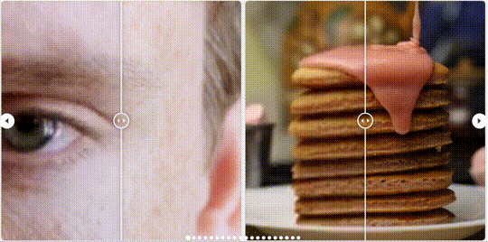
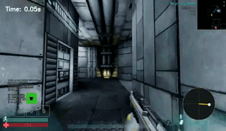
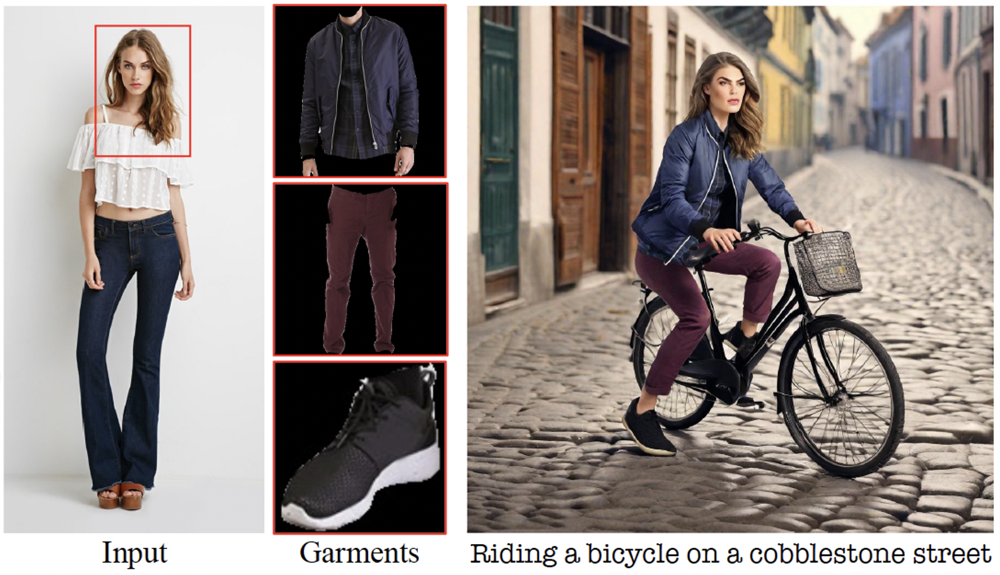
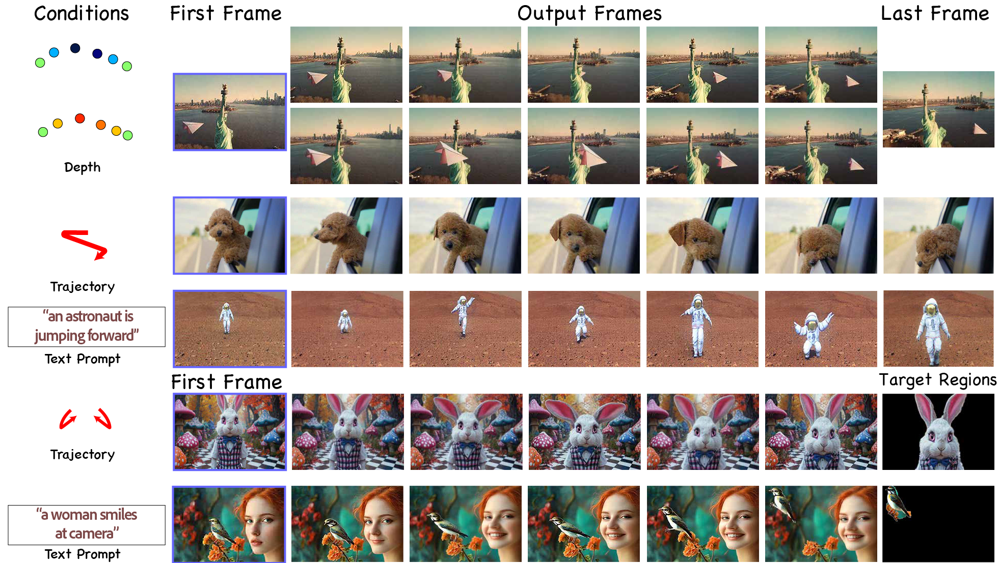

Yang Zhou
Senior Research Scientist
Adobe Research
- Generative video
- Digital humans
- Video world models
Building controllable models for dynamic visual worlds: from faces and characters, to video generation, to interactive world models.




Senior Research Scientist
Adobe Research
Building controllable models for dynamic visual worlds: from faces and characters, to video generation, to interactive world models.

Specialist models -> foundation priors -> applied generation -> world models.
My path started with small, specialist models for digital humans, then moved into the foundation-model era: embracing large generative priors and bringing them back into downstream creative applications. As that paradigm became increasingly established, world models felt like the missing piece, because they force the hardest open problems in generation to be solved together: real-time synthesis, physical and causal consistency, long-context reasoning, and persistent 3D memory or world state.
Pose, expression, lip-sync, rigging, and stylized 2D/3D character animation.
2018 - 2022Large priors become tools for editing, customization, restoration, and creative production.
2023 - 2025
Generation becomes interactive simulation with memory, actions, and geometric control.
2024 - nowOnce foundation models became strong enough, the next question became how to use their priors to solve precise creative tasks: digital humans, low-level video quality, generative blending, and customization.

Foundation priors make human identity, body, clothing, and pose easier to edit without rebuilding the whole specialist stack.

Use large priors to restore texture and temporal consistency instead of treating super-resolution as a purely local signal problem.

Blend controls, semantics, and temporal priors so generated motion feels continuous rather than stitched.

Adapt a general model to a user-specified subject, motion, or style while preserving the breadth of the foundation prior.
After foundation models pushed generation quality and content coverage forward, control exposed the next bottleneck: long video generation that stays coherent as users act, revisit, and explore.
My video world model journey started from long video generation, then progressively added controllable action, spatial memory, and real-time streaming.
Extend video diffusion from short clips into sustained generation.
Turn user action into a stable interface for exploration.
Keep world state consistent while streaming interactively.

Long video generation as the first step beyond short high-quality clips.
Camera pose as the shared representation for action control and 3D memory.

Interactive video world model with long-horizon memory and real-time streaming.
Motivation
WorldCam is built around two requirements for interactive video worlds: more precise control and 3D world consistency.
Users need a precise, continuous way to specify how the camera moves through a generated world.
The world should remain spatially coherent when the camera moves, revisits, and reveals new regions.
Through experiments, we found camera pose can serve as the unified representation for both motivations.

WorldCam enables precise action control through complex, entangled discrete keyboard and continuous mouse inputs.

WorldCam preserves the underlying 3D scene structure during long-horizon rollouts, so when an agent revisits the same location from the same view angle, the scene remains recognizable and spatially consistent.

Two active internship projects are exploring world-state design: one learns compact memory for compression and registration, while the other builds shared state for multiplayer synchronization.
Use an encoder to learn compact world-state representations, turning raw memory retrieval into latent retrieval.
Current frame-based retrieval is often dominated by heuristic rules and can miss the flexible memory needed for the current query. A learned representation should make retrieval more compact, adaptive, and robust.


Use a shared world state plus cross-player synchronization so multiple players see one consistent evolving world, scaling toward arbitrary numbers of players, views, and actions.
 Generated video for 4 players with different camera trajectories
Generated video for 4 players with different camera trajectories Top: generated 2-player interaction in Minecraft. Bottom: ground truth.
Top: generated 2-player interaction in Minecraft. Bottom: ground truth.